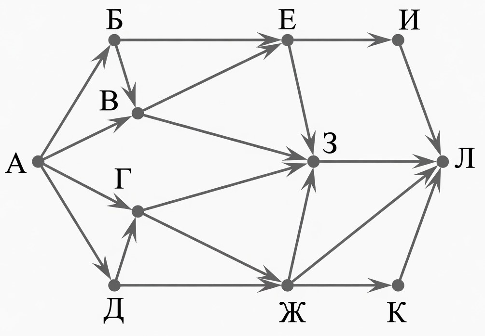
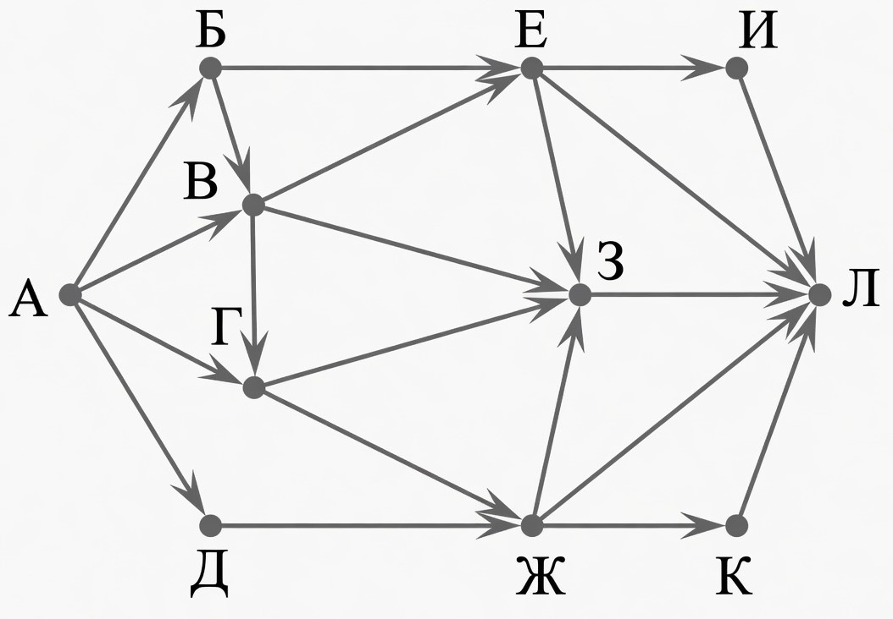
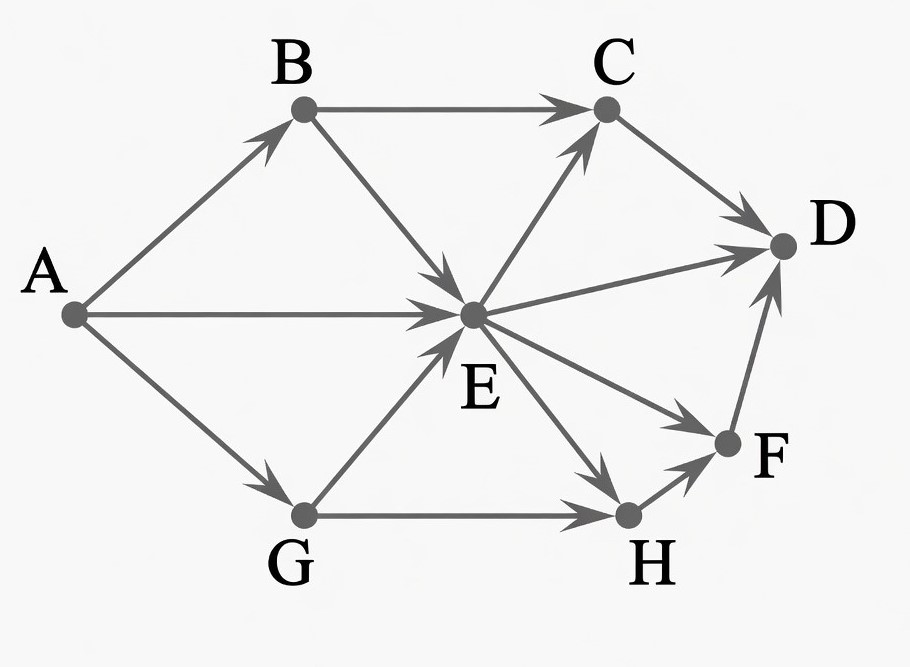
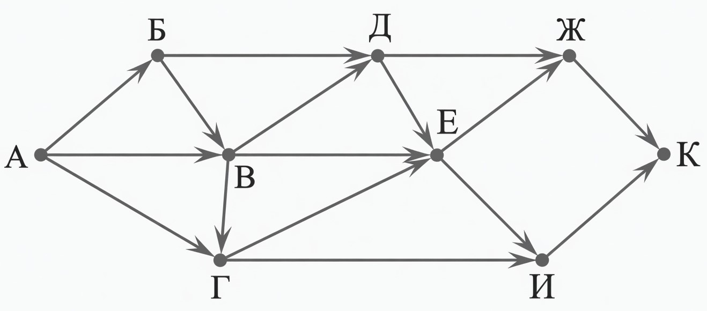
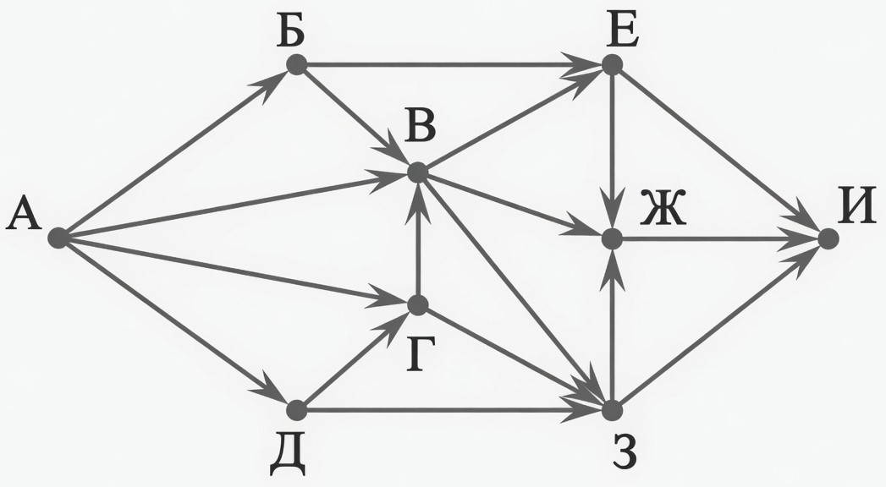
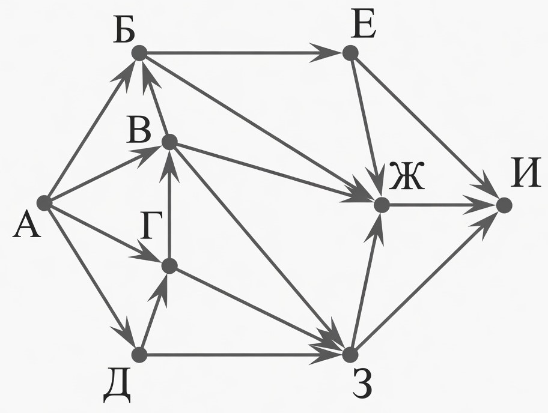

Задачи на количество путей в графе
Подсчитайте количество различных маршрутов из начальной в конечную вершину.
Задача 1

На рисунке — схема дорог, связывающих города А, Б, В, Г, Д, Е, Ж, З, И, К и Л. По каждой дороге можно двигаться только в одном направлении, указанном стрелкой. Сколько существует различных путей из города А в город Л?
Решение:А = 1;
Б = А = 1;
В = А + Б = 1 + 1 = 2;
Д = А = 1;
Г = А + Д = 1 + 1 = 2;
Е = Б + В = 1 + 2 = 3;
Ж = Г + Д = 2 + 1 = 3;
З = В + Г + Е + Ж = 2 + 2 + 3 + 3 = 10;
И = Е = 3;
К = Ж = 3;
Л = Ж + З + И + К = 3 + 10 + 3 + 3 = 19.
Ответ: 19.
Ответ: 19.
Задача 2

На рисунке — схема дорог, связывающих города А, Б, В, Г, Д, Е, Ж, З, И, К и Л. По каждой дороге можно двигаться только в одном направлении, указанном стрелкой. Сколько существует различных путей из города А в город Л?
Решение: А = 1;
Б = А = 1;
В = А + Б = 1 + 1 = 2;
Д = А = 1;
Г = А + В = 1 + 2 = 3;
Е = Б + В = 1 + 2 = 3;
Ж = Г + Д = 3 + 1 = 4;
З = В + Г + Е + Ж = 2 + 3 + 3 + 4 = 12;
И = Е = 3;
К = Ж = 4;
Л = Е + Ж + З + И + К = 3 + 4 + 12 + 3 + 4 = 26. Количество путей равно 26.
Ответ: 26.
Ответ: 26.
Задача 3

На рисунке — схема дорог, связывающих города А, B, C, D, E, G, H, F. По каждой дороге можно двигаться только в одном направлении, указанном стрелкой. Сколько существует различных путей из города A в город D?
Решение: A = 1;
B = A = 1;
G = А = 1;
E = A + B + G = 1 + 1 + 1 = 3;
C = B + E = 1 + 3 = 4;
H = G + E = 1 + 3 = 4;
F = E + H = 3 + 4 = 7;
D = E + C + F = 3 + 4 + 7 = 14. Количество путей равно 14.
Ответ: 14.
Ответ: 14.
Задача 4

На рисунке — схема дорог, связывающих города А, Б, В, Г, Д, Е, Ж, И, К. По каждой дороге можно двигаться только в одном направлении, указанном стрелкой. Сколько существует различных путей из города А в город К, проходящих через город Д?
Решение:А = 1.
Б = А = 1.
В = А + Б = 2.
Г = А + В = 3.
Д = В + Б = 3.
Е = Д = 3 (В и Г не учитываем, поскольку путь должен проходить через город Д).
Ж = Д + Е = 6.
И = Е = 3.
К = Ж + И = 9. Верный ответ 9.
Ответ: 9.
Ответ: 9.
Задача 5

На рисунке — схема дорог, связывающих города А, Б, В, Г, Д, Е, Ж, З, И. По каждой дороге можно двигаться только в одном направлении, указанном стрелкой. Сколько существует различных путей из города А в город И, проходящих через город Г?
Решение: А = 1.
Д = А = 1.
Г = А + Д = 2.
В = Г = 2. (А и Б не учитываем, поскольку путь должен проходить через Г)
Е = В = 2. (Б не учитываем, поскольку путь должен проходить через Г)
З = В + Г = 4. (Д не учитываем, поскольку путь должен проходить через Г)
Ж = В + Е + З = 8.
И = Е + Ж + З = 14.
Ответ: 14.
Ответ: 14.
Задача 6

На рисунке — схема дорог, связывающих города А, Б, В, Г, Д, Е, Ж, З, И. По каждой дороге можно двигаться только в одном направлении, указанном стрелкой. Сколько существует различных путей из города А в город И, проходящих через город Ж?
Решение: А = 1
Д = А = 1
Г = А + Д = 1 + 1 = 2
В = А + Г = 1 + 2 = 3
Б = А + В = 1 + 3 = 4
Е = Б = 4
З = Д + Г + В = 1 + 2 + 3 = 6
Ж = Е + Б + В + З = 4 + 4 + 3 + 6 = 17
И = Ж = 17 (учитываем только город, через который должен проходить путь) Количество путей равно 17.
Ответ: 17.
Ответ: 17.